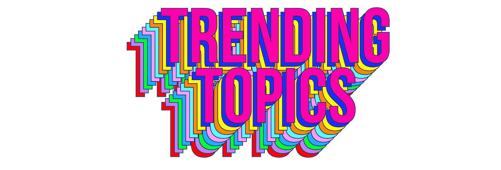

How to play...

A game of conversational sabotage handcrafted by robots.
THE GOAL
of the game is to suavely and subtly Trend Topics during the course of "normal" conversation.
TO START:
Send your friends this link:
http://trendingtopics.fun
See that word or phrase? That's your Topic. Keep it secret! That is, until you feel that it is the time to Trend!
If your topic is PIZZATOWN, you might say:
"The rats in PIZZATOWN
don't know how good they have it."
BUT THERE'S A CATCH!
While you try to sneakily slide PIZZATOWN into conversation, others are listening for you to say strange things. If they catch "PIZZATOWN", they call you out by saying
"You're trending PIZZATOWN
!"
(Stickler for details? They don't have to get the term 100% correct, just 87%.)
WINNING:
If you need to experience the comfort of a temporary meritocracy in world where there is no such thing, feel free to attach a point, a wager, or shots to each successfully Trended Topic and/or each time you catch a friend trying to Trend. End the game whenever you want - or never.
TIPS:
Have a topic that you don't like? No problem, pick another. But take a minute to ask yourself, is it you, or the topic?
Don't feel like talking today? Don't worry, you can still play. Simply listen for odd words or turns of phrase coming from your loudmouth friends and colleagues and catch them in the act.
Don't feel like talking or listening? We recommend taking a walk, a nap, or adopting a pet from your local shelter.
Tell me more about this thing.